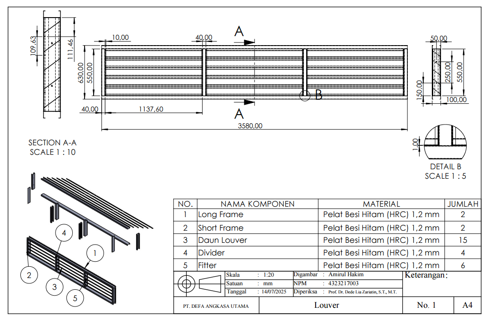
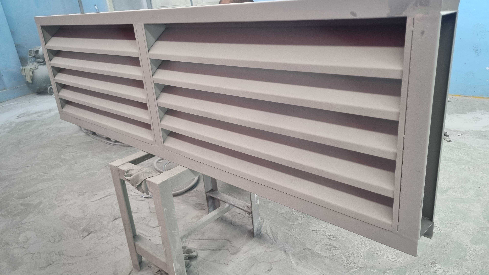
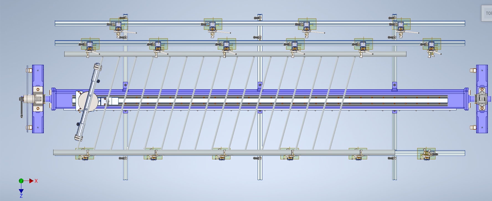
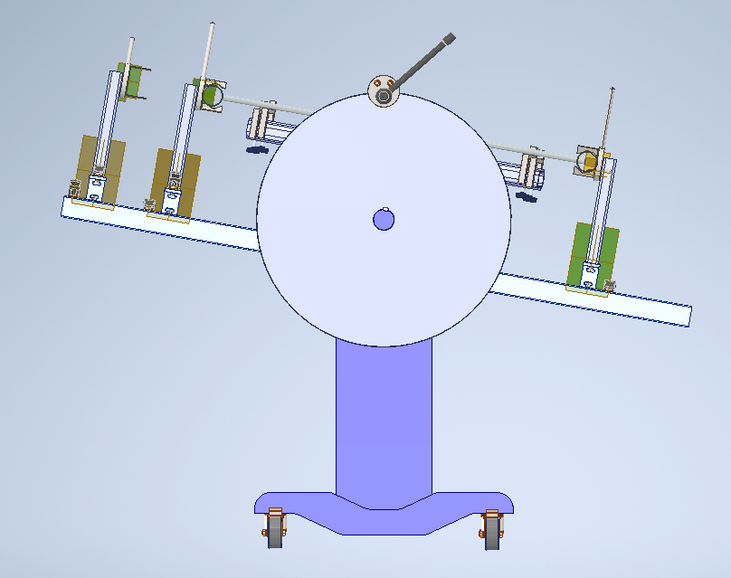

Frame Support
Support the long louver assembly along its span instead of relying on temporary workshop positioning.
PT Defa Angkasa Utama · Manufacturing Engineering Internship
Manufacturing engineering internship focused on HVAC sheet-metal fabrication and louver production, followed by the development of a proposed dedicated welding fixture for more repeatable frame and blade assembly.
Manufacturing Engineering Intern · Aug 2025 – Oct 2025
Engineering Summary

Proposed Fixture
The fixture was developed as a dedicated assembly aid for the louver frame. The concept supports the long rectangular workpiece, provides repeatable positioning points along the assembly, and uses multiple clamping locations to hold the sheet-metal components during tack welding and assembly.

Manufacturing Context
The product is a fabricated HVAC louver constructed from 1.2 mm HRC sheet steel. Its long, relatively thin assembly geometry makes consistent positioning important during frame and blade assembly.

Process Analysis
The Operation Process Chart documents the manufacturing sequence from material marking and shearing through bending, welding, surface finishing, powder coating, drying, sealant application, and packaging. MIG welding and assembly form one stage of this complete manufacturing route.
The OPC provides baseline process documentation. The proposed fixture was not production-tested, so no revised cycle time or productivity improvement is claimed.

Fixture Design Objective
Support the long louver assembly along its span instead of relying on temporary workshop positioning.
Provide consistent mechanical reference points for frame, divider, and blade positioning.
Use distributed manually operated clamps to restrain components during assembly and tack welding.
Keep the fixture sufficiently open so the operator can reach required weld locations.
Provide manually operated clamping and positioning features for workpiece setup and removal; this is a mechanical fixture concept, not an automated machine.
Mechanical Design


Design Status
The fixture was developed as an engineering proposal following observation of the manufacturing process. The CAD model demonstrates the intended workholding and positioning concept, but the design was not fabricated or production-tested during the internship.
Documentation